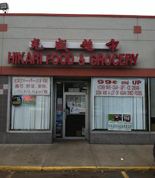
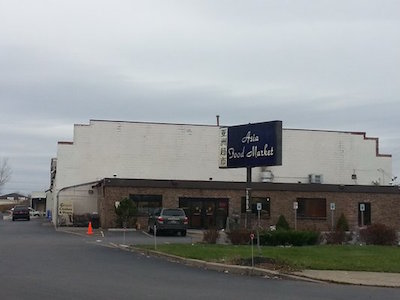

Shopping for Asian food might not be as hard as you'd think. One of the many places to shop for Asian grocery is at Hikari Food & Grocery (Guang Sheng Chao Shi) along with their fresh vegetables.

Source: Facebook
Another one of these grocery shops is the Asia Food Market. It is one of the newly opened shops for Asian groceries and products. Not only that, Canton House is a Chinese restaurant that has their own grocery shop attached/connected to the restaurant itself.

Source: Yelp